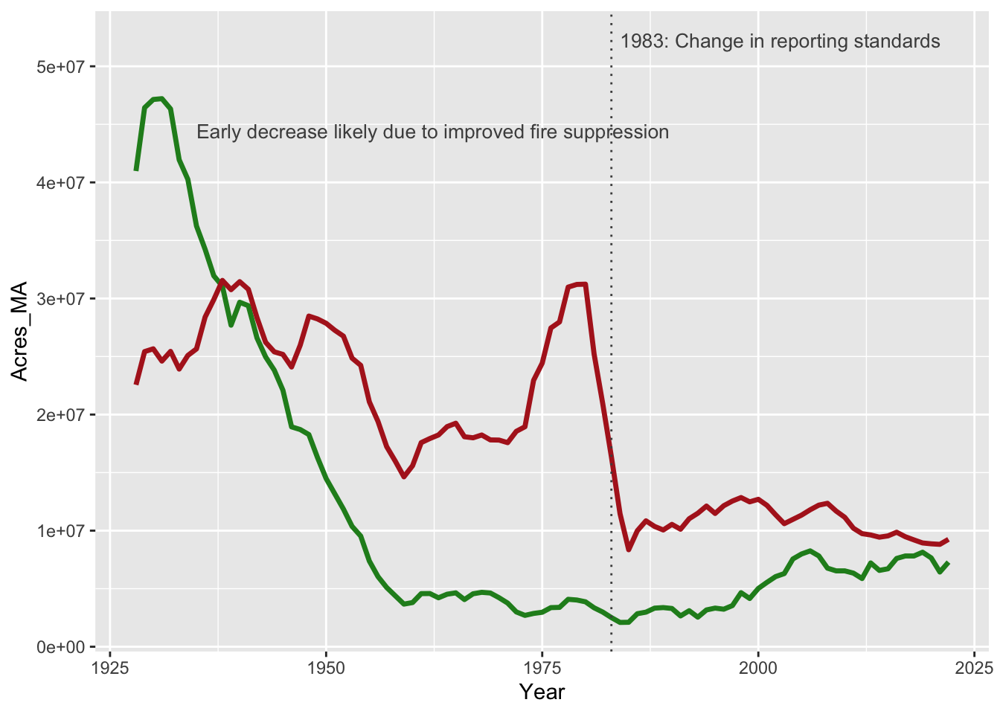

Using scrapper, we extracted the dataset from the link above and store it as CSV
Load Data
wildfires <-read_csv("wildfire_data.csv")
Rows: 99 Columns: 3
── Column specification ────────────────────────────────────────────────────────
Delimiter: ","
dbl (3): Year, Fires, Acres
ℹ Use `spec()` to retrieve the full column specification for this data.
ℹ Specify the column types or set `show_col_types = FALSE` to quiet this message.
In the original visualization, the lines appear jagged due to year - to - year variability. To address this, we apply a 5 - year moving average, which smooths out short - term fluctuations and reveals longer - term trends more clearly. This process creates two new columns:
Fires_MA:a 5 - year moving average of the Fires column.
Acres_MA:a 5 - year moving average of the Acres column.
The fill = NA argument ensures that values at the boundaries, where a full 5 - year window isn’t available, are left as missing. The align = “center” option centers the moving window on each year, providing a balanced smoothing effect.
wildfires <- wildfires %>%mutate(Fires_MA =rollmean(Fires, 5, fill =NA, align ="center"),Acres_MA =rollmean(Acres, 5, fill =NA, align ="center") )wildfires
annotated_plot <- base_plot +geom_vline(xintercept =1983,linetype ="dotted",color ="gray30") +annotate("text",x =1984,y =max(wildfires$Acres, na.rm =TRUE),label ="1983: Change in reporting standards",hjust =0,size =3.5,color ="gray30") +annotate("text",x =1935,y =max(wildfires$Acres, na.rm =TRUE) *0.85,label ="Early decrease likely due to improved fire suppression",size =3.5,hjust =0,color ="gray30")annotated_plot

labelled_plot <- annotated_plot +scale_y_continuous(name ="Acres Burned (Smoothed)",sec.axis =sec_axis( ~ . /150, name ="Number of Fires (Smoothed)")) +labs(title ="Wildfires in the U.S. (1926–2017): Contextualizing the Trends",subtitle ="Smoothed trends show a decline in number of fires over time, despite claims linking wildfires to climate change",x ="Year",caption ="Source: National Interagency Fire Center")labelled_plot